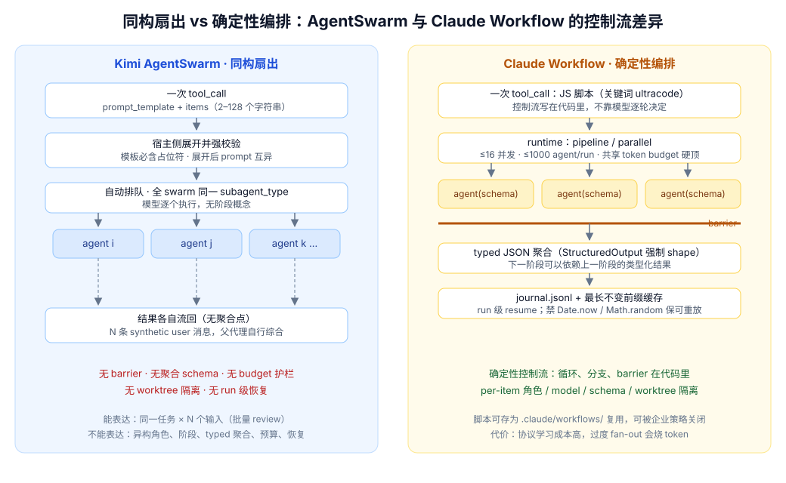
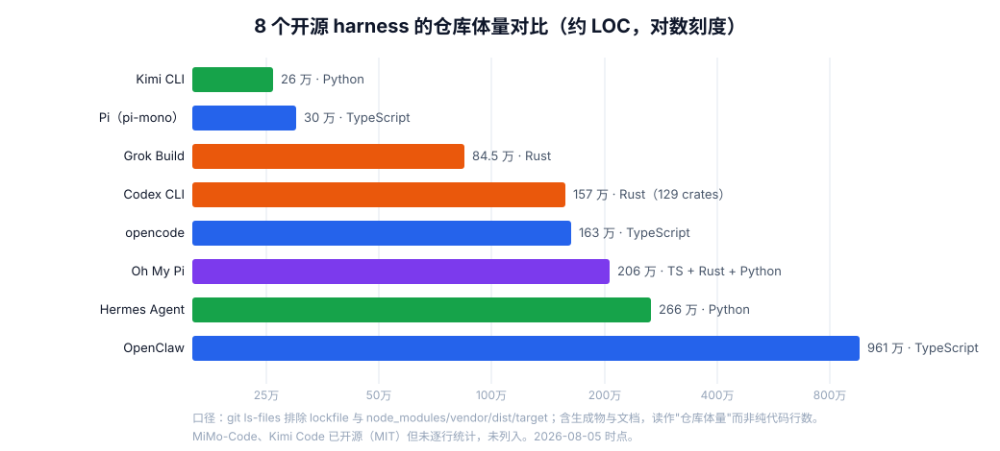

Phistory：13 个编程 Agent Harness 深度对比
所谓 harness，是模型外面的那层运行时：组装 system prompt、调度工具调用、管理上下文压缩、执行权限边界。同一个模型配不同的 harness，表现可以天差地别——2026 年 coding CLI 爆发、模型能力趋同之后，harness 设计成了产品差异的主要来源。但 harness 内部长期是黑盒，直到 Phistory 这类项目把 13 家主流 CLI 实际发给模型的 prompt 与 tool schema 逐版本捕获下来，横向比较第一次有了可复测的证据底座。
这不是一篇“谁的 system prompt 写得更好”的排名。我的核心判断是：
Harness 不是一段 system prompt，而是一套运行时协议。 真正决定 Agent 能力边界的，是上下文怎样压缩、状态存在哪里、工具如何校验权限、子代理继承什么、异步结果怎样回流，以及长期行为如何被修改。
先给四条结论：
- 提示词长短与能力强弱无关。 Codex、Grok、Pi 的核心 prompt 都不长：Codex 把能力收进
exec，Grok 放进 tool schema，Pi 留给扩展。真正关键的是 schema 能否尽早拒绝错误、权限是否由 runtime 强制执行。 - 多 Agent 的分水岭不是“能不能 spawn”，而是 context、resume、workspace、completion、trust 五个字段。 只提供一个
prompt的子代理，本质上仍是一次昂贵的无类型函数调用。 goal/plan/todo是三种状态，compaction/memory/history 是三种存储。 混用前者的典型症状是“计划写完就算目标完成”；混用后者的典型症状是把召回的旧记录当成当前事实。- Skill、MCP、workflow 是三个平面：程序性知识、能力/数据边界、确定性控制流。 都叫“插件”会掩盖最重要的安全与状态差异。
本文从三个互相独立的视角展开：协议（Phistory 捕获的 prompt 与 tool schema）、实现（代码规模、语言与分发形态）、口碑（社区评价与安全事件），三者并不总是一致——协议最优雅的口碑未必最好，声量最大的也未必经得起审计。怎么读：赶时间看结论、横向比较与设计原则；要做 harness 设计，逐项拆解是主菜。
研究口径：Phistory 能证明什么
Phistory 会安装指定 CLI 版本，用 claude-tap 发起一次最小请求，在不调用真实模型 provider 的情况下截获 prompt-bearing HTTP request，并保存 prompt.md、trace.jsonl 和 meta.json。仓库对捕获流程有明确说明。
本文固定在 Phistory commit d29ec71，使用当时列出的 13 个最新版：版本索引。
| Harness | 本文快照 |
|---|---|
| Claude Code | 2.1.221 |
| Codex CLI | 0.146.0 |
| Antigravity CLI | 1.1.10 |
| Grok Build | 0.2.118 |
| MiniMax Code | 3.0.57 |
| Kimi Code | 0.31.1 |
| MiMo Code | 0.1.9 |
| OpenClaw | 2026.7.1-2 |
| Hermes Agent | v2026.8.3 |
| Kimi CLI | 1.49.0 |
| opencode | 1.18.12 |
| Pi | 0.83.0 |
| Oh My Pi | 17.2.7 |
必须先限定证据边界：一次快照只证明该版本在这次启动模式、模型、权限、workspace、session 与 MCP/plugin 配置下暴露了什么。 它不证明产品在所有模式下都相同。例如 OpenClaw 本次是在新 workspace 的 bootstrap 状态；Antigravity 的文字提到 subagent，但此次 tool schema 没有 spawn 工具；Codex 的协作能力也受到本次 session policy 约束。下面凡是说“没有”，都特指“本次捕获没有显式暴露”，不是断言产品永远不支持。
另外，本文证据分两层：协议分析（逐项拆解与横向比较）固定在上面这个快照；代码规模与社区评价两章超出快照范围，使用 2026-08-05 时点的公开数据（开源仓库、npm registry、HN/博客），口径在各章自注。
总览：13 种控制面
| Harness | 一句话定位 | 最大短板 |
|---|---|---|
| Claude Code | 语义下沉 tool schema，能力最全 | 协议庞大，能力分散难审计 |
| Codex CLI | 小顶层工具面 + V8 编排双层协议 | 分层多，调试心智成本高 |
| Antigravity | artifact-first 的产品交互闭环 | prompt 与 tool surface 漂移 |
| Grok Build | capability-gated 子代理 | 无显式 compaction/memory/goal |
| MiniMax Code | 人格化桌面助手 + dispatcher | 人格 token 税，工具名漂移 |
| Kimi Code | 最完整的长任务状态机 | 只读靠 prompt，swarm 无隔离 |
| MiMo Code | checkpoint + 两级召回的恢复架构 | 新旧 boilerplate 互相冲突 |
| OpenClaw | ambient 个人 agent 平台 | 副作用授权过宽 |
| Hermes Agent | skill 即 procedural memory | 持久行为可被自动 patch |
| Kimi CLI | 清晰传统的基础 agent loop | 无 goal/compaction/memory |
| opencode | 模型无关的开源入口 | 无条件 prompt 规则失控 |
| Pi | 最小透明内核 + TS 扩展 | 核心不保证安全与长期状态 |
| Oh My Pi | URI 统一的 agent OS | 协议学习成本最高 |
逐项拆解
1. Claude Code：把 Harness 语义下沉到 Tool Schema
System prompt。 Claude Code 的核心行为层并不长：session guidance、文件记忆、环境、compaction 和交付规则集中在前 80 行，后面大部分 token 都是工具协议。这个结构比“把所有行为写成自然语言”更可靠，因为诸如 worktree 枚举、后台默认值、structured output 和 resume 参数都能由 runtime 校验。值得注意的是，本次 session 又额外写了“除非用户要求，不调用 Agent/Workflow”：能力存在不等于当前策略授权使用。
状态。 记忆采用“一条事实一个文件”，按 user / feedback / project / reference 分类；MEMORY.md 只保留一行索引，不堆正文。它还明确要求删除错误记忆、去重、不要保存代码和 git 已能推出的信息，并把被召回的路径当历史 claim 再验证。Compaction 则完全交给宿主：上下文过长时总结并自然继续，不要求模型提前收尾。
Sub-agent 与 workflow。 Agent 提供动态 agent type、模型覆盖、后台默认、继续消息、worktree 和 remote isolation。独立的 TaskCreate/TaskUpdate 管依赖图，后台进程则由另一套 task output/stop 管理。更强的是 Workflow：JavaScript 脚本用 agent / pipeline / parallel / workflow 编排，支持 JSON Schema 输出、共享 token budget、MCP 按需加载、约 16 并发和 1000-agent 总上限；恢复时按“最长未变化的 agent 调用前缀”复用缓存，并刻意禁用 Date.now() 与随机数来维持可重放性。
判断。 这是 13 个里最完整的“确定性多 Agent 控制流”之一。ReportFindings 也说明工具不只是执行动作，还能把 review 结果变成 UI 可消费的 typed data。代价是协议很大，行为分散在 tool description、system reminder、agent definition 和 session policy 中；审计时只读最前面的 system prompt 会严重低估它。
独有功能（官方文档侧证）。 捕获之外，官方文档与 CHANGELOG 还证实了几张别家目前拿不出的牌。上述 Workflow 不是实验功能——2.1.160 起改名 ultracode、默认开启、企业可用 disableWorkflows 关闭，有公开文档背书。其余三张：全生命周期 hooks，约 30 个事件（PreCompact、SubagentStart、WorktreeCreate、PermissionDenied……）× 5 种 handler（command / http / mcp_tool / prompt / agent），hook 本身可以是一个 LLM prompt 或一个子代理，粒度上别家的插件钩子（集中在工具执行前后）追不上；OS 级沙箱，macOS Seatbelt / Linux bubblewrap + 域名级网络代理，2.1.221 的 mask 模式还能对外隐藏真实凭据文件——竞品要么容器级隔离（重），要么纯权限提示；auto memory，file-per-fact + MEMORY.md 索引，子代理可有自己的记忆目录——AGENTS.md 类静态记忆人人有，模型自写、带索引上限的持久事实库是独一份。另外两个正名：agent teams 是另一个独立的实验功能（CLAUDE_CODE_EXPERIMENTAL_AGENT_TEAMS flag 门控，teammate 间可互发消息），与 workflow 并列而非同一物；ReportFindings 则仅见于 prompt 捕获，官方文档未载。
证据：memory 与 compaction、Agent、typed review、Workflow 控制流、Workflow 恢复；另见官方文档 workflows、hooks、sandboxing、sub-agents、agent teams。
2. Codex CLI：小表面、双层工具协议
Developer prompt。 Codex 使用 Developer Prompt，而不是把全部规则放进 System Prompt。最关键的上下文合同很明确：发生 compaction 后仍保留所有用户请求，把跨压缩的工作视为同一条逻辑链，不重做已经完成的操作。这比“自己记住别重复”更强，因为它直接描述了宿主会保留什么。
工具面。 顶层主要是 collaboration、exec、request_user_input 和 wait。真正的 shell、patch、goal、plan、MCP resource、image 等工具都挂在 exec 里的 tools.*。exec 自身是无 Node、无网络、无文件系统的临时 V8 isolate，只负责组合调用和裁剪输出。好处是顶层 schema 很小，模型可用 JavaScript 并行、过滤和聚合；代价是一次失败可能发生在“模型生成 JS → JS 调 nested tool → nested tool 调 runtime”三层中的任何一层。
Sub-agent。 collaboration.spawn_agent 形成 /root/task/... 树，子代理还能继续 spawn。fork_turns 可取 none、all 或最近 N 轮，完整历史 fork 继承 parent model/reasoning。当前快照只有 4 个并发槽，所有 agent 共享 cwd 和 filesystem；这让协调简单，却没有 Grok/Claude 那样的 worktree 边界，多个写代理必须靠任务切片避免冲突。
Goal、plan、skills、MCP。 Goal 是 durable lifecycle：只有显式请求才创建，可带 token budget，普通 blocker 必须连续出现三轮才能标记 blocked。Plan 是用户可见的当前执行状态，不等于 goal。Skills 支持 filesystem、environment resource、orchestrator resource 和 custom resource 四类 locator，是本文最一般化的技能来源模型。MCP 既可把函数直接注入为 mcp__server__tool，也有 list/read resources 原语。
判断。 Codex 最突出的不是工具数量，而是边界分层：用户沟通、agent 协作、代码式工具编排、durable goal 各自有协议。弱点同样来自分层：排查问题时必须先判断状态属于 collaboration、exec store、goal、plan，还是实际 shell session。
源码补证（codex-rs）。 prompt 层的说法在开源实现里几乎逐条可验，这也让它成为 13 家里“JS 编排”机制唯一能被源码级审计的样本。exec 由专用 crate code-mode-runtime 实现：直接嵌入 rusty_v8（锁定 =150.4.0，链接时开启 V8 sandbox，不是 deno_core 的 JsRuntime），每次调用在独立的 codex-code-mode-host 子进程里新建一个干净 isolate。沙箱边界是“白名单 + 什么都没装”：全局只安装 tools、store/load、notify、yield_control、exit 等少数函数，同时显式删除 console、Atomics、SharedArrayBuffer、WebAssembly，任何 import 一律抛错——“无网络、无文件系统”不是靠拦截，而是能力从未存在。模型提交的是 freeform 工具的原始 JS 文本（带 lark grammar 约束，可选 // @exec: pragma 只控制 yield_time_ms 与 max_output_tokens，默认 10 秒 yield、10k token 输出预算）；JS 里每次 tools.xxx() 被桥成一个 Promise，host 侧每个嵌套调用独立 tokio::spawn 走正常工具路由——Promise.all 的并行就是这么落地的；中间结果只存在于 JS 内存，只有 text()/image() 显式追加的内容经 token 截断后回流模型上下文。到点未完成的脚本会作为一个 cell 挂起并返回 cell ID，模型随后用顶层 wait 工具对这个 cell 续等或 terminate_execution 强杀。collaboration 工具被刻意标记 DirectModelOnly，从 tools.* 排除，只能顶层 tool_call——编排层不能自己 spawn agent。fork_turns 的实现也比 prompt 说的更讲究：fork 时只保留 system/developer/user 消息和 final-answer 的 assistant 消息，工具调用、reasoning、web search 一律丢弃；LastNTurns 按 fork-turn 边界（以用户消息或 agent 间通信为界）保留最后 N 轮后缀。4 个并发槽的真实语义是含 root 在内的 resident thread LRU 集合，满了驱逐最久未用的可卸载者。这些细节把 Codex 的分层从“prompt 宣称”坐实为“架构强制”。
证据：compaction 合同、Skill locator、团队与共享 workspace、spawn_agent context fork、exec isolate、goal 与 MCP；源码（main 分支，与 0.146.0 可能有漂移）：code-mode-runtime、嵌套工具桥接 callbacks.rs、fork 过滤 spawn.rs、并发 LRU residency.rs。
3. Antigravity：Artifact-first，但 Prompt 与 Tool Surface 漂移
System prompt。 Antigravity 明显面向“做出可展示产品”，不是通用仓库维护。它默认 Vanilla CSS，并强制 vibrant colors、dark mode、glassmorphism、Google Fonts、渐变和微动画，甚至把“页面简单”定义为失败。这对从零 demo 有帮助，但对已有 design system 是错误的默认：模型会把产品品味写死在全局 prompt，而不是先读取仓库视觉语言。
Artifact 与 transcript。 长报告、表格、图和 diff 应写成 artifact，回复只指出文件与待决策，不复述全文。Transcript 同时保存 compact 与 full JSONL，逐行一一对应；当 compaction 丢掉旧轮次时，可以从 raw transcript 恢复。这是一种清晰的“工作集 / 原始轨迹”分层。异步消息采用 push wakeup，明确禁止轮询。
Sub-agent 与工具错位。 Prompt 解释了 conversation ID、subagent transcript，并让模型 grep invoke_subagent；但本次 # Tools 只有 image、grep、file、command、schedule、web 等 schema，没有 spawn/invoke tool。这里应判为本次捕获配置中的不可达指令，而不是猜测产品没有 subagent。Slash commands 也只能推荐给用户，模型不能直接执行，说明 /goal 与 /schedule 属于 UI command plane，不是 agent tool plane。
Datetime。 用户消息里直接写“current local time is $PHISTORY_DATETIME”，没有 session-start、采样时刻或 stale 提示。长会话或恢复会话中，这会把快照伪装成实时钟；这比当前 Kimi Code 的处理更有问题。
判断。 Antigravity 的强项是 artifact、transcript 与产品交互闭环；弱项是全局审美偏置和 prompt/tool 一致性。一个 harness lint 应能自动发现“prompt 引用了未注册工具”这类错误。
证据：强制视觉偏好、Skill 目录、push 与双 transcript、slash command 与 datetime、本次 tool section 起点。
4. Grok Build：Capability-gated Sub-agent 与 Late-bound MCP
System prompt。 Grok 的核心 prompt 很短，集中在可逆性、外部副作用确认、专用工具优先和输出质量。真正的 harness 架构都在工具描述里。这是“prompt 负责原则，schema 负责机制”的典型。
Sub-agent。 spawn_subagent 区分 general-purpose / explore / plan，默认后台，支持 raw transcript resume、cwd、model inheritance 和 worktree。最关键的是 capability_mode = read-only / read-write / execute / all：如果 runtime 真按工具类别裁剪权限，它比“你是只读代理，请别写”可靠得多。一个隐患是子代理只收到 compacted AGENTS.md，父代理必须把关键测试和约束显式重复到 prompt。
MCP。 Grok 不是把所有 MCP schema 一次塞进上下文，而是先 search_tool 找到候选和 schema，再用 use_tool 调 server__tool。这会显著压低初始 tool token，也允许服务器晚连接；代价是至少多一次 round trip，而且“工具名不对、schema 不合”更晚才暴露。
Workflow 与 todo。 Rhai workflow 可从内联脚本、项目或用户目录启动，后台运行，带 1–1024 agent budget 和 validate_only。但 resume 只支持同进程暂停；进程重启后是终态，弱于 Claude 的前缀缓存恢复。todo_write 默认按 ID merge，只发变化项即可，比全量替换更适合长任务。
判断。 Grok 的最佳设计是把只读/可写/可执行落实为 capability，而不是人格描述；主要缺口是没有显式主会话 compaction、durable memory 或 goal 协议。它适合一次 session 内的强并发，不适合把长期自主任务只交给核心 runtime。
证据：短核心 prompt、sub-agent capability/resume/isolation、MCP discovery、MCP invocation、增量 todo、Rhai workflow。
5. MiniMax Code：关系型桌面助手，而非纯 Coding Loop
System prompt。 MiniMax Code 用很大篇幅塑造 Mavis：年轻同事、关心情绪、可以有偏好和一点脾气，并提供大量“不要这样说 / 应该这样说”的示例。它能让消费级桌面助手更有连续人格，但对 coding harness 是昂贵的固定税：每个代码任务都要携带与当前工作无关的关系指令。
任务路由。 默认自己做；verification 可以自由委派，implementation delegation 必须先得到用户明确同意。这比“复杂就自动 spawn”尊重授权，但 task schema 只有 description、prompt、agent name 和 background，没有 context inheritance、resume、capability 或 workspace isolation。它更像隐藏 child session launcher，而不是完整的 agent protocol。
Runtime 管理。 mavis 是 CLI 风格 dispatcher，用一个 {command, args} 管 agent roster、system prompt、cron 和 sessions。它缩小了工具表面，又由 desktop dispatcher 做子命令级字段校验。Memory 分 user / main / topic / summary，基础 prompt 还要求按 project → agent → user 的最窄层级保存，并优先信任直接用户证据。
Goal 与 mismatch。 本次只暴露 get_goal 和 update_goal，没有 create_goal，说明 goal 由 UI/宿主启动后交给模型收尾。更明确的错误是 prompt 强制外部事实使用 web_search，实际工具只有返回 raw content 的 web_fetch。Runtime context 提到 MCP config 是数据目录的一部分，但本次没有通用 MCP tool。date: $PHISTORY_DATETIME 也没有 snapshot/stale 说明。
判断。 MiniMax Code 的设计中心是“一个长期存在、可创建其他助手的桌面 Mavis”，不是最小 coding agent。mavis dispatcher 和分层 memory 值得借鉴；人格 token、工具名漂移和缺失的 delegation contract 会直接影响可靠性。
证据：persona 与 delegation policy、freshness 与 memory 规则、mavis dispatcher、memory schema、task schema、goal 读取/收尾、runtime datetime、实际 web_fetch。
6. Kimi Code：最完整的长任务状态机之一
System prompt。 Kimi Code 是 action-first：非简单问答默认实际调用工具；专用文件工具优先于 shell；并行读取被明确鼓励；workspace、secret、git 与外部副作用边界写得很细。其 compaction 合同是本文最具体的之一：宿主只重写旧轮次，尽量保留原始用户消息，生成第一人称摘要，记录命令、路径、结果、未知项和 TODO；瞬态工具状态不受保证，压缩后要重新枚举后台任务。
Sub-agent。 新 Agent 从零上下文启动，可 resume；coder 子代理甚至能继续调用 Agent、AgentSwarm 和 mcp__*。AgentSwarm 用 {{item}} 模板一次派发最多 128 个同构任务，适合批量 review。问题有两个：其一，schema 没有 worktree/isolation；其二，explore 被描述为 prompt-enforced read-only，却仍拥有 Bash。只要 runtime 不限制 Bash，所谓只读就是行为建议，不是权限边界。
Goal、plan、todo。 这是少数把三者真正分开的 harness：CreateGoal 要求可验证终态，SetGoalBudget 支持 turn/token/time，UpdateGoal 有三轮 blocker 审计；plan mode 写入 plan file 并通过 ExitPlanMode 做 UI 审批；TodoList 只追踪本次多步执行且全量替换。Goal 负责“为什么和何时结束”，plan 负责“执行前选哪条路”，todo 负责“当前做到哪一步”。
Skill 与 MCP。 Skill 有 Project > User > Extra > Built-in 明确优先级，匹配后必须用 Skill 工具装载。当前 capture 没有配置具体 MCP schema，但 coder agent 的工具表明确允许动态 mcp__*，说明它走按会话注入路线。
Datetime 判断。 0.31.1 明确说 $PHISTORY_DATETIME 在 session start 采样、长会话会陈旧，时间敏感任务必须运行 date。因此“在 prompt 里写 datetime 明显有问题”这个判断过于宽：时间锚点有用，把锚点冒充 live clock 才是 bug。 历史上 0.19.2 只说它是 reference、精确时间用 Bash；到 0.20.1 才首次明确 session-start 与 stale 风险。当前实现已经修正了语义。
判断。 Kimi Code 在长期目标、压缩、后台任务和 skill precedence 上很完整；最需要补的是 capability-gated read-only 和并发写隔离（AgentSwarm 与别家编排能力的逐项对比见横向比较）。
证据：compaction 与 datetime、Agent、AgentSwarm、goal 创建、goal budget、goal 状态守卫、plan approval、Skill 与 todo、旧 datetime 语义、stale 修订。
7. MiMo Code：状态架构先进，Prompt Stitching 债务也最明显
System prompt。 前半段几乎就是 opencode boilerplate：断言任何问题都离不开 extensive internet research、要求递归抓 Google、每次读 2000 行、自动创建 .env placeholder，并要求 Markdown todo。后半段却出现完全不同的 actor、checkpoint、task 和 memory runtime。两种范式叠在一起，形成明显的 prompt stitching debt：一个说“一切都要联网”，另一个已经有更细的按需 skill、memory 和 task 机制。
Actor。 actor 是本文最细的子代理生命周期之一：run / spawn / status / wait / cancel / send，context 可取 none / state / full，actor ID 可跨 turn resume，输出可用 JSON Schema，还能绑定 persistent task ID。代价是 actor ID 与 task ID 是两套身份；传错 TID 时绑定会被静默丢弃，子代理结果无法进入 task progress。后台 actor 完成后也不会自动唤醒当前 turn，只会在用户下次交互时出现；需要即时结果时必须显式 wait。
Checkpoint、memory、history。 checkpoint writer 是 structured state 的唯一写者，维护 project/session/task/global 四层文件。memory 对 curated Markdown 做 BM25，history 再对 raw messages/tool events 做 FTS，是正确的“先摘要召回、再逐字证据”两级模型。但内部存在一句危险矛盾：系统总则说 memory 中的函数、路径只是历史 claim，行动前要验证；memory tool 又写 A HIT IS AUTHORITATIVE。前者才是安全语义。
隐私与 goal。 MiMo 可选择索引 Claude Code memory，并明确警告 user/feedback 可能被暴露给遭 prompt injection 的 subagent；这段自我揭示是诚实的，也说明跨 harness memory federation 必须默认关闭。MiMo 没有 durable goal，而是用可持久化的层级 task graph 表达工作；task 有 open、in_progress、blocked、done、abandoned，但缺少独立 completion criterion 与预算。
判断。 如果只看状态机，MiMo 很接近“可恢复 agent runtime”；如果看整个 prompt，它又是 13 个里最需要清理旧路径的之一。最佳修复不是再加冲突说明，而是删除旧 opencode 工作流，让 checkpoint/task/skill 成为唯一控制面。
证据：旧 boilerplate、checkpoint architecture、actor lifecycle、memory/history 两级召回、Claude memory 隐私警告、persistent task graph。
8. OpenClaw：Ambient Personal Agent，而非单纯 Coding Harness
System prompt 与工具。 OpenClaw 的工具覆盖 browser、canvas、paired nodes、message、gateway、media、cron、memory、goal 和 sessions；它面对的是跨设备、跨消息渠道的个人助手场景。此次新 workspace 又注入完整 BOOTSTRAP / SOUL / IDENTITY / USER / TOOLS / AGENTS 模板，所以 prompt 极长；正常已初始化会话不一定承担同样成本。
Sub-agent。 sessions_spawn 默认 clean isolated context，只有确实需要当前 transcript 才 context=fork；还支持 sandbox、attachments、cleanup、lightContext 和 cwd。sessions_yield 直接结束当前 turn 等待完成事件，结果作为下一条消息回来。这比不断 sessions_list 轮询更节省 token，也把 async completion 定义成宿主事件。
Memory 与 goal。 daily notes 保存原始发生过什么，MEMORY.md 保存提炼后的长期记忆，而且只在 main direct session 加载，避免群聊泄漏。memory_search 可检索 memory 或 session corpus，再用 memory_get 精确取行。Goal 有显式创建、token budget 和三轮 blocker 规则。当前时间不靠伪实时变量；需要时调用 session_status。
Skill governance。 Skill Workshop 不是直接改 live skill，而是先创建 proposal，再由用户 apply、reject 或 quarantine。这是本文最好的技能变更治理：把“模型发现可复用经验”和“允许长期改变未来行为”分成两个动作。
风险。 默认 AGENTS heartbeat 允许 agent 自主检查项目、更新文档、commit 并 push 自己的变化。对 ambient assistant，这可能是追求主动性的选择；对代码仓库，它越过了常见的“外部可见副作用必须显式授权”边界。Skill Workshop 很保守，heartbeat 却很激进，两套安全哲学不一致。
判断。 OpenClaw 最强的是 session、memory、channel 与定时任务的一体化，而不是代码编辑本身。设计 personal agent 时值得参考；设计 coding harness 时，应删去默认 push 权限，并缩小 bootstrap 注入。
证据：工具与事件驱动规则、memory 隔离、heartbeat 权限、sessions_spawn/yield、Skill Workshop、goal 创建、goal 状态守卫。
9. Hermes Agent：把 Skill 当作 Procedural Memory
System prompt。 核心人格很短，但 skill policy 极其激进：只要“部分相关”也必须加载，复杂任务后还应保存新 skill；已加载 skill 发现错误时要立刻 patch。它把长期能力提升明确建模为 procedural memory，而不是把操作步骤塞进普通 memory。
Memory 与 compaction。 Durable memory 只存稳定事实，task progress 和短期结果去 session_search。Memory 支持 atomic batch，并按最终字符预算检查，能在一次事务里删除旧项再添加新项。SKILL_PRUNED marker 则直接承认 compaction 可能丢掉 skill 正文，并要求使用前重新加载；这比假装技能一直在上下文里更可靠。
Sub-agent 与 trust。 delegate_task 的 child 是隔离 conversation/terminal，后台 only，最多 3 并发；本次 nesting 被关闭，也没有 resume、context fork 或 worktree。它最值得借鉴的是 trust policy：child summary 明确被称为 self-report；上传、写文件、发布等副作用必须返回 URL/ID/path，再由 parent fetch/stat/read-back 后才能宣布成功。相比 opencode 的“generally trust”，这是更安全的默认。
确定性编排与 cron。 execute_code 用 Python 在 5 分钟、50 次工具调用、50KB stdout 内做条件、循环和结果过滤，适合机械编排；它不等同于 Claude Workflow，因为没有 durable workflow graph 或 agent resume。Cron 可绑定 skills、在 fresh session 运行并自动投递，适合长期定时程序。
风险。 skill_manage 要求已加载 skill 出错时立即 patch，虽然创建/删除需确认，但修改既有持久技能不经过 proposal/review。一次错误归因就可能永久改变未来行为。OpenClaw 的 pending proposal 状态比这种自动 patch 更稳。Hermes 只有 todo，没有 durable goal；Conversation started: $PHISTORY_DATETIME 的表述则正确地把时间标成起点而非实时钟。
判断。 Hermes 的记忆分层、self-report 验证和 skill-as-procedure 很成熟；主要风险是 skill trigger 过宽与自动修改行为。应保留“发现问题”，把“应用持久修改”改成 staged proposal。
证据：memory/skill 基础规则与 compaction marker、delegate trust contract、atomic memory、session history、skill mutation、todo、session-start time。
10. Kimi CLI：Kimi Code Rich Runtime 之前的基础循环
Developer prompt。 Kimi CLI 与 Kimi Code 共享 action-first、同语言回复、专用工具和 AGENTS.md 规则，但整体更轻。它没有独立 compaction contract，也没有 durable memory/goal。
Sub-agent。 Agent 新实例零上下文，可按 agent ID resume，支持 model override、foreground/background 和 timeout。coder / explore / plan 类型明确；explore 的“prompt-enforced read-only 却仍有 Shell”问题与 Kimi Code 相同（见横向比较第 1 节）。没有 AgentSwarm、worktree、context inheritance 或 structured output。
Plan、todo、skills。 Plan mode 通过文件和 ExitPlanMode 请求 UI 审批；SetTodoList 每次替换完整列表。Skill 有四级 precedence，但本次没有专用 Skill tool，只要求模型直接读取 SKILL.md。MCP 只出现在产品帮助 skill 的描述中，没有通用 MCP 工具被捕获。
Datetime。 它把 $PHISTORY_DATETIME 称为 reference，并要求精确时间走 Shell；这已经避免把快照当绝对真值，但没有像 Kimi Code 新版那样解释 resumed session 会陈旧。
判断。 Kimi CLI 是清楚、传统、可用的 agent loop；Kimi Code 在其上补齐了 compaction、goal、swarm、Skill tool、cron 与更细的安全合同。二者差异说明“换一个 system prompt”并不能获得 rich runtime，能力来自宿主状态机。
证据：核心与 datetime/skills、Agent、plan approval、全量 todo。
11. opencode：Prompt Hygiene 最差的典型
System prompt。 它把“任何问题都不能在没有 extensive internet research 的情况下解决”写成无条件真理，强制递归抓 URL 和 Google；实现依赖时每次都要联网；读代码固定 2000 行；发现环境变量时自动新建 .env placeholder。后果很具体：本地重命名也会增加网络延迟和 prompt-injection 面；读取小函数浪费上下文；用户只想诊断时仓库仍可能被写入。
Prompt 还建议使用 sequential thinking “if available”，本次 schema 没有这个工具。虽然这不是硬错误，因为有 if available，但它暴露了模板没有根据实际 tool surface 收敛。
Memory。 用户偏好被写到项目的 .github/instructions/ 目录下，文件名是 memory.instruction.md。这会把个人偏好混入版本库，可能被误提交、影响其他贡献者或跨用户泄漏。Memory 应由 harness profile/session 管，不应默认成为仓库源文件。
Sub-agent。 task 支持 fresh/resume 和并行，但没有 context mode、capability、workspace isolation 或 output schema；更糟的是它要求 parent “generally trust” child output。没有验证句柄时，任何“测试通过、文件已写、远端已更新”都只是 self-report。
状态与扩展。 有可见 todo 和一个匹配后加载的 Skill tool，没有 main compaction、durable goal 或 persistent task graph。MCP 仅出现在 customize-opencode skill 的说明，本次没有通用 MCP surface。
判断。 opencode 的问题不是功能少，而是全局规则缺少条件。最有效的改进是删除强制联网、固定读取量、自动 .env 和仓库内个人 memory，把它们分别改成 freshness guard、分页工具策略、显式写授权和 profile memory。
证据：无条件联网与写入规则、仓库内 memory、task 与 trust、todo/Skill。
12. Pi：最小内核 + TypeScript 扩展，以及刻意没有 MCP
System prompt 与工具。 Pi 的核心只有 bash / edit / read / write。edit 支持一次提交多个不重叠替换，且所有 oldText 都针对同一份原始文件快照匹配；这是一条小但很好的原子性语义。Prompt 还明确说明扩展可注入 custom tools。
扩展机制（这次捕获看不到的一半）。 Pi 的扩展就是一个 TypeScript 模块：默认导出工厂函数 (pi: ExtensionAPI)，由 jiti 直接加载、免编译，自动发现于 ~/.pi/agent/extensions/ 与项目内 .pi/extensions/（后者需 project trust 审批），也支持 npm/git 来源与 /reload 热重载。同一个 API 可以 registerTool（TypeBox 定义 schema，AJV 校验；可用同名注册覆盖内置工具，甚至 --no-builtin-tools 只留扩展工具）、registerCommand / registerFlag / registerProvider，并能订阅贯穿 agent loop 的事件钩子：before_agent_start 改写 system prompt、context 在每次 LLM 调用前改写消息列表、tool_call 拦截或修改参数、session_before_compact 接管压缩。权限系统刻意缺席：核心默认 YOLO，tool_call 事件返回 { block: true } 就是官方示范的权限闸门写法——安全边界本身是扩展，不是内核。
“没有 MCP”是立场，不是欠债。 Mario Zechner 明确写了 “pi does not and will not support MCP”。论证分三层：一是上下文税——Playwright MCP 21 个工具占 13.7k token、Chrome DevTools MCP 26 个工具占 18k token，会话未开始先吃掉 7–9% 上下文；二是组合性——MCP server 的输出必须穿过 agent 上下文才能组合，CLI 可以 pipe、重定向、链式调用；三是替代方案——给 agent 一组带 README 的 CLI 脚本做渐进披露（他的 browser-tools README 只有 225 token），非要用 MCP 就用 mcporter 把 server 包成 CLI。值得注意的是他自己 2025-08 的实测结论：协议本身不是问题（设计良好的 MCP 与 CLI 成功率相同、甚至快 23%），所以准确的批评对象是主流 MCP server 的工具设计与上下文倾销，不是协议本身。OMP 和社区后来都把 MCP 加了回来，恰好证明这是路线选择而非技术不能。
没有暴露的部分。 本次 capture 没有 subagent、todo、memory、goal、skill、MCP 或 explicit compaction。这不等于生态没有：当前版本已补上 compaction（上下文逼近阈值自动触发、切割点绝不落在 tool result 上、结构化摘要 + 文件读写记录跨压缩累积、可被扩展接管）和 JSONL 树形 session（/fork /tree 分支导航自动生成 branch summary）。Mario 的清单式拒绝仍然成立：无内置 todo（写 TODO.md）、无 plan mode（--tools read,grep,find,ls 凑出只读模式）、无后台 bash（用 tmux）、无 sub-agent（让 pi 通过 bash 自 spawn）。
判断。 Pi 是最容易审计的 base harness：token 小、工具行为直白、失败定位简单；它押注的是“模型已经会当 coding agent，harness 的职责是提供稳定小表面然后让开”。代价是长任务恢复、安全策略、异步完成和 durable state 都不在最小内核里，全部推给扩展层——对可组合研究平台是优点，对开箱即用的长期 autonomous agent 是缺口。仓库现已移交 earendil-works/pi（原 badlogic/pi-mono）；另据社区对依赖关系的源码观察，Pi 也是 OpenClaw 的底层 agent 引擎。
证据：最小 prompt 与扩展边界、四个工具 schema；另见 Pi 扩展文档、compaction 文档、Mario 的 no-MCP 论证与 Pi 设计总结。
13. Oh My Pi：最接近 Agent Operating System
内部资源模型。 Oh My Pi 用统一 URI 表示 skill://、agent://、history://、artifact://、local://、mcp://、issue 和 PR；额外工具被挂成 xd:// virtual device，通过 write JSON 执行。这样文件、agent output、history 和 MCP resource 都能进入同一 read/write 管线。
代码工具。 AST edit、DAP debugger、LSP 与 browser 都是一等设备。跨文件 rename 必须走 LSP，AST rewrite 先 staged proposal 再 resolve/reject；这比把代码理解全部降级为 grep + text patch 更可靠。代价是模型要学会 URI、device schema、staging 和专用选择器，协议学习成本最高。
Eval 与 orchestration。 eval 是跨调用和 subagent 持久化的 Python/Bun kernel，可调用任意 session tool、one-shot completion、subagent、parallel、pipeline 和 budget。它既是数据处理层，也是 DAG runtime。task 一次批量派发，要求 parent 先写 shared Goal / Constraints / Contract，每个 child 写 Target / Change / Acceptance，并支持 output JSON Schema。Hub 同时管理 peer messaging、job delivery和 project-scoped supervised process；最多 32 个 subagent 并发。
状态与 MCP。 Todo 支持 phase、task、block/unblock，却没有显式 durable goal、长期 personal memory 或 main-session compaction contract。mcp:// 统一的是 MCP resource 读取，不应误解为所有 MCP action 都天然变成文件操作。
两个过度承诺。 第一，task 宣称并发编辑重叠会自动解决，因此不应为 overlap 串行；文本合并也许能解冲突，语义冲突仍必须由 contract 与最终验证发现。第二，prompt 写“不要重新审计 applied edit，tool result 就是 verification”。同一 prompt 后面确实要求 smoke test 和行为验证，所以合理解释应是“不要为了确认 patch 落盘而重复读取”，而不是“patch 成功等于程序正确”；原措辞仍容易让模型混淆两层验证。
与 Pi 的直接对立。 OMP 是 pi-mono 的 fork（现 can1357/oh-my-pi），却重写了完整的 MCP 客户端子系统（OAuth、/mcp 命令族、从 .claude/.cursor/.codex 等 8 种配置文件自动继承），MCP 工具直接合入运行时工具表——Pi 核心拒绝付的上下文税，OMP 主动付了。同源两叉，一叉把工具当代码（扩展即 TypeScript），一叉把万物当 URI 资源，是 harness 设计张力最干净的活体对照。
判断。 OMP 的最强项是把 LSP、debugger、browser、process、agent 和 resource 统一为 runtime primitives；它不是“更多工具”，而是一个 agent OS。下一步应补 durable goal/compaction，并收紧 overlap 与 edit-verification 的措辞。
证据：内部 URI 与 virtual device、LSP/AST/DAP、delegation gates、行为验证与争议措辞、persistent eval/DAG、hub、typed task contract、phase todo。
横向比较：差异真正在哪里
1. Tool Surface：显式 Schema、Dispatcher、Meta-tool、Virtual Device
| 模式 | 代表 | 优势 | 失败方式 |
|---|---|---|---|
| 大量显式 typed tools | Claude、Kimi Code、Kimi CLI | 工具名与参数直接可见，权限可细分，schema 早拒绝 | schema 本身占大量上下文；工具升级会扩大 prompt |
| Late-bound dispatcher | Grok MCP、MiniMax mavis |
初始表面小，可动态发现服务或子命令 | 多一次发现调用；参数错误到运行期才出现 |
| 代码式 meta-tool | Codex exec、Hermes execute_code |
能并行、循环、过滤大结果，减少模型 round trip | 调试跨两层；若 runtime guard 不强，代码编排会放大副作用 |
| Workflow DSL | Claude JavaScript、Grok Rhai | 把 fan-out、barrier、budget、resume 变成确定性控制流 | 要维护脚本状态与缓存语义；过度 fan-out 会烧 token |
| Virtual device / URI OS | Oh My Pi | 统一资源寻址，可把 LSP/DAP/browser 作为一等设备 | 协议最难学；错误常先表现为 URI/device 使用错误 |
| 最小工具内核 | Pi | 透明、低 token、扩展容易 | 核心不保证安全、长期状态和异步语义 |
工具设计的关键不是“模型会不会调用”，而是错误在多早被拒绝。例如 Grok 的 capability_mode=read-only 可以在 runtime 拦写；Kimi/Kimi CLI 只给 explore agent 一段“只读”文字，却仍提供 Bash，权限边界更弱。类似地，专用 ReportFindings 能保证 review 输出 shape，而“请按 JSON 回答”只能期待模型自觉。
2. Sub-agent：至少比较五个字段
| Harness | Context | Resume | Workspace | Completion | Parent trust |
|---|---|---|---|---|---|
| Claude Code | 新 Agent fresh；类型定义补系统上下文 | SendMessage 继续 | shared / worktree / remote | 后台 push | 明确提醒别轻信其他 agent |
| Codex | none / all / 最近 N 轮 |
follow-up 触发新 turn | 共享 cwd/filesystem | mailbox + wait | parent 负责综合；无独立 side-effect contract |
| Antigravity | Prompt 谈 transcript/ID，本次 spawn 不可达 | 无法从本次 schema判断 | 无法判断 | runtime push | 无法判断 |
| Grok | prompt + compacted AGENTS | raw transcript/tool state | shared / cwd / worktree | 自动通知或显式取 output | 未给强验证合同 |
| MiniMax Code | schema 未定义 inheritance | 无 resume 字段 | 未定义 isolation | background 完成唤醒 owner | 未给强验证合同 |
| Kimi Code | 新实例零上下文 | 按 agent ID resume | 未定义 isolation | synthetic user-role push | parent 负责转述，未强制 read-back |
| MiMo Code | none / state / full |
actor ID resume | 未定义 isolation | run inline；spawn 默认不唤醒当前 turn | “generally trust” |
| OpenClaw | isolated 默认；可 fork transcript | session/history 继续通信 | 继承 workspace，可要求 sandbox | sessions_yield 等事件 |
应检查 session result，未形成 Hermes 式统一规则 |
| Hermes | clean context + 显式 context 文本 | 本次无 resume | 隔离 conversation/terminal | 后台 push | 明确把 summary 当 self-report 并要求 read-back |
| Kimi CLI | 新实例零上下文 | 按 ID resume | 未定义 isolation | 后台通知 | parent 转述，未强制独立验证 |
| opencode | fresh；prompt 手工补全 | task ID resume | 未定义 isolation | 自动通知 | 明确“generally trust” |
| Pi | 无 | 无 | 无 | 无 | 无 |
| Oh My Pi | blank；共享 context contract | agent/history URI 可追踪；direct task 无显式 resume 字段 | eval agent 可请求 worktree | 自动投递 + hub | 明确 completed 不等于 artifact accepted |
一个更完整的通用 schema 至少应长这样：
{
"task": "bounded, self-contained assignment",
"role": "scout | implementer | reviewer",
"context": { "mode": "none | state | full | recent", "turns": 4 },
"capabilities": ["read", "write", "execute", "network"],
"workspace": { "mode": "shared | worktree | remote" },
"completion": "inline | push | yield",
"resume_from": "agent-id",
"output_schema": {}
}
还少不了一条宿主级规则：child 的文字是 self-report；文件、URL、测试和外部副作用必须由 parent 或独立 verifier 复核。 Hermes 在这一点上最好；opencode 的默认最危险。
机制层四个问题的直接回答
1. 调用形态：spawn 是不是主循环里的 tool_call？是，无一例外。 凡暴露 sub-agent 的 harness，派发入口全部是模型可见的显式工具：Claude Agent/SendMessage、Codex collaboration.spawn_agent、Kimi Agent/AgentSwarm、Grok spawn_subagent、opencode task、MiMo actor、OpenClaw sessions_spawn、Hermes delegate_task、MiniMax task、OMP task。仅有的“非 tool_call”路径都在编排层内部——Claude Workflow 的 agent() 与 OMP eval 的 agent() 是脚本原语，但脚本本身仍由 Workflow/eval 工具调用启动。本次捕获中 Antigravity 的 spawn 不可达（prompt 提到 invoke_subagent 但 schema 没有），Pi 核心则根本没有 sub-agent。
2. 子 agent 的 system prompt 和主 agent 一致吗？没有一家是“全文复制 + 追加任务”。 三种装配模式，且前两种都有源码级证据：
- 同 base + 追加层：Codex 把父会话的
base_instructions原样写进子 config（build_agent_spawn_config），内置 role 层目前基本是空文件（explorer.toml无内容，行为引导写在父侧描述里）；OpenClaw 生成独立的 “# Subagent Context” 文档后以extraSystemPrompt追加；Kimi CLI 的机制完全可见——所有 agent 共用agents/default/system.md，第 5 行的${ROLE_ADDITIONAL}占位符由 coder/explore/plan 各自的 YAML 定义注入不同文本，同时用allowed_tools/exclude_tools裁剪工具（explore 被排除写工具但仍留 Shell）。 - per-type 整段替换：opencode 的装配点是
agent.prompt ?? SystemPrompt.provider(...)——agent 自带 prompt 就替换基础 prompt，否则与主代理同 base；Claude Code 每个 agent type 的 model、tools、prompt 来自.claude/agents/*.md定义或内置类型。 - 用户自定义：MiniMax 的
mavis agent create直接接受system_prompt字段；Claude/Grok/opencode/Codex role 都支持用户文件。
3. 结果怎么回流？事件驱动 push 已经赢了。 成熟 harness 全部明文禁止轮询：Kimi Code 后台完成以 synthetic user-role 消息送达；Claude 用 task-notification；Codex 是 mailbox + wait_agent（且 wait 只返回“哪些 agent 有更新”，不返回内容本身）；Hermes 强制后台、结果自行回到对话；OpenClaw 用 sessions_yield 挂起当前 turn 等完成事件；OMP 经 hub 自动投递。反例也有信息量：MiMo 的 spawn 完成不自动唤醒当前 turn，要即时结果必须显式 wait——prompt 得专门写一句防止模型干等。
4. AgentSwarm 和别家的多代理差在哪？它是“宿主侧模板批量展开”，不是编排。 AgentSwarm 一次调用只接受一个 prompt_template 加一组字符串 items（≤128），宿主在启动前强校验（≥2 items、模板必含 {{item}}、展开后互异）并自动排队；全 swarm 同一个 subagent_type，结果各自流回。下图把它和 Claude Workflow 的控制流画在一起：左侧 AgentSwarm 的生命周期在模板展开后就结束了，右侧 Workflow 的生命周期从脚本启动一直延续到 journal 恢复。

逐项对照差异——上表比的是单个 spawn 的合同，下表比的是批量编排能力：
| 能力 | Kimi AgentSwarm | Claude Workflow | Codex collaboration | OMP task + eval | Grok spawn + Rhai |
|---|---|---|---|---|---|
| per-item 角色 / system prompt | 全 swarm 一个 type | agent() 独立 agentType / model |
每个 spawn 独立 message / role / fork | tasks[] 每项独立 agent |
每个 child 独立 capability / cwd / model |
| 异构任务 | 单模板填空 | 任意 JS 生成 prompt | 自由文本 | 自由文本 + 格式合同 | 自由文本 |
| barrier / 阶段聚合 | 无，结果各自流回 | parallel() 即 barrier |
仅 mailbox，无显式 barrier | DAG 波次 + pipeline 阶段 | Rhai 任意控制流 |
| 聚合 output schema | 无（128 段自由文本） | 每 agent() 可带 JSON Schema |
无 | per-item outputSchema |
schema 重试不耗 budget |
| budget 护栏 | 仅 128 上限 | 共享 token budget 硬顶 | 捕获未见 | +Nk 建议 / +Nk! 硬顶 |
agent_budget 1–1024 |
| run 级恢复 | 仅逐个 resume_agent_ids |
最长不变前缀缓存 + journal | per-agent followup | kernel 状态持久，无前缀缓存 | 仅同进程暂停恢复 |
| 写隔离 | 无字段，共享 workspace | isolation: worktree |
共享 cwd / filesystem | eval isolated worktree |
isolation: worktree / cwd |
一句话：AgentSwarm 能表达“同一任务 × N 个输入”，表达不了异构角色、阶段 barrier、typed 聚合、预算和恢复；它能批量 review，不能替代 workflow。
3. Goal、Plan、Task/Todo 不应混为一谈
- Goal：跨 turn 的 durable objective，至少要有 completion criterion、status、budget、blocked/complete guard。Kimi Code 最完整；Codex/OpenClaw 有较小版本；MiniMax 本次只能读取和收尾宿主创建的 goal。
- Plan：执行前的方案与授权 artifact。Kimi Code/Kimi CLI 的
ExitPlanMode会把 plan file 交给 UI 审批；它不表示任何实现已完成。 - Task graph：可引用、可依赖、可持久化的执行单元。MiMo 的 TID 与 Claude 的 task graph 属于这一层。
- Todo：当前 session 的轻量进度 UI。全量替换简单但易丢状态；按 ID merge 更适合长任务；OMP 的 phase/block 状态更丰富。
MiMo 的 persistent tasks 很强，但没有“整个目标何时算结束”的独立 contract；Kimi Code 同时有三层，因此 runtime 可以区分“计划已批准”“子任务已完成”“目标已验证完成”。这不是命名差异，而是状态机能否阻止提前结束。
4. Compaction、Memory、History 的正确分层
当前工作集 --有损重写--> compaction summary
稳定跨会话事实 -------> durable memory
逐字轨迹与工具证据 ---> raw history / transcript
- Compaction 应由宿主触发并说明保留项、丢失项和瞬态状态。Kimi Code 最具体，Codex 和 Claude 也清楚；其余多数只提供记忆或 transcript，却没有主会话压缩合同。
- Memory 应只存会改变未来默认行为、且不能廉价重新发现的事实。Claude 的“一事实一文件 + 索引”和 Hermes 的短期状态禁入规则都不错。
- History 用来找原话、旧命令和工具错误，不能当当前世界状态。MiMo、Hermes、OpenClaw 都明确提供 raw/session search。
- 召回内容必须被视为历史 claim。 路径、版本、服务状态会过期。MiMo memory tool 的
A HIT IS AUTHORITATIVE与其总则冲突；正确语义应是“命中证明过去记录过，不证明现在仍然成立”。 - 隐私作用域必须与 agent context 对齐。 OpenClaw 只在 main session 加载私人
MEMORY.md是正确做法；MiMo 对 Claude memory federation 的警告说明，跨 agent 召回不能默认开放。
顺带一个相关的注入上下文正确性问题：环境时间。 安全的写法是给时间字段标明采样时刻、时区和 staleness 语义（session-start snapshot，长会话会陈旧，需要实时时钟就走工具）。Kimi Code 从 0.20.1 起就是这样修的，Kimi CLI 与 Hermes 也基本安全；仍有问题的写法是把快照写成 “current local time” 却不给任何语义——Antigravity、MiniMax 本次就是这样，长会话或恢复会话里会把旧快照伪装成实时钟。
5. Skill、MCP、Workflow 是三个不同平面
| 机制 | 保存的是什么 | 何时使用 | 典型实现 |
|---|---|---|---|
| Skill | 可复用步骤、规范、模板、脚本 | 模型知道要做什么，但需要领域程序性知识 | Claude/Kimi 文件 Skill；Hermes procedural memory；OpenClaw Workshop |
| MCP | 外部工具、数据与 resource boundary | 需要动态访问 GitHub、数据库、业务系统或远程能力 | Codex 直接注入 + resources；Grok 两阶段 dispatcher；OMP mcp:// resource |
| Workflow | 确定性 fan-out、条件、循环、聚合、预算与恢复 | 多 Agent 控制流不能只靠模型临场决定 | Claude JavaScript、Grok Rhai、OMP eval DAG |
三个具体结论：
- Skill 自动进化必须有治理。 OpenClaw 的 proposal → apply/reject/quarantine 比 Hermes “发现问题立即 patch live skill”更稳。
- MCP eager 与 late-bound 是 token/可靠性的交换。 直接注入 schema 早发现错误但吃上下文；
search_tool → use_tool节省初始 token，却增加一次发现和晚失败。 - Swarm 不等于 workflow，workflow 的语言选择还是生态赌注。 同构模板扇出（AgentSwarm）与确定性脚本编排的逐项能力对比见 sub-agent 一节；此处只补一个常被忽略的角度：Claude 选 JavaScript、Grok 选 Rhai、OMP 复用 Python——模型写 JS 的训练语料最多、Rhai 最冷僻，同样的编排能力，模型”一次写对”的概率大概率按这个顺序递减。
代码规模、实现语言与分发形态
协议之外，代码本身是第三个证据来源。下表统计可获取源码的 harness（2026-08-05 时点；口径为 git ls-files 全量跟踪文件排除 lockfile 与 node_modules/vendor/dist/target 后的行数总和，含生成物与文档，应读作“仓库体量”而非纯代码行数）：

上图按仓库体量排序画出 8 个开源实现：最小的 Kimi CLI 与 Pi 在 30 万行量级，最大的 OpenClaw 接近千万行——但它已不只是 coding harness，而是带移动端与 161 个渠道扩展的平台。
| 项目 | 主语言 | 约 LOC | 结构 | star |
|---|---|---|---|---|
| OpenClaw（openclaw/openclaw） | TypeScript | ~961 万 | 平台型巨型 monorepo：161 个渠道扩展 + iOS/macOS 原生应用 | 38.5 万 |
| Hermes Agent（NousResearch/hermes-agent） | Python | ~266 万 | 扁平单仓，核心依赖仅 10 个且全部 == 精确 pin |
22.6 万 |
| Oh My Pi（can1357/oh-my-pi） | TS + Rust + Python | ~206 万 | Pi fork，10 个 Rust crate 原生加速，Bazel 构建 | 2.2 万 |
| opencode（anomalyco/opencode，原 sst） | TypeScript | ~163 万 | Turborepo monorepo，核心 .ts/.tsx 约 63 万行 | 19.3 万 |
| Codex CLI（openai/codex） | Rust | ~157 万 | 单 Rust workspace，129 个 crate 细粒度拆分 | 10.4 万 |
| Grok Build（xai-org/grok-build） | Rust | ~84.5 万 | 2026-07 丑闻后开源；工具实现大量移植自 Codex/opencode | 2.4 万 |
| Pi（earendil-works/pi，原 pi-mono） | TypeScript | ~30 万 | 精炼 monorepo，9 个包，根零运行时依赖 | 8.4 万 |
| Kimi CLI（MoonshotAI/kimi-cli） | Python | ~26 万 | 单 Python 包 + 独立 Web UI，29 个依赖全部 pin | 1.1 万 |
| MiMo Code（XiaomiMiMo/MiMo-Code） | TypeScript | 未逐行统计 | opencode fork + SQLite FTS5 记忆 + Dream 整理子代理，MIT | 1.3 万 |
| Kimi Code（MoonshotAI/kimi-code） | TypeScript | 未逐行统计 | TS 实现已开源（MIT）；npm 分发为 21 MB 打包 bundle | 0.6 万 |
（star 为 2026-08-05 时点 GitHub 数据，含社媒动量水分——OpenClaw、Hermes 的星数与工程口碑的背离见口碑章。）
三件事值得单独说：
- 语言分三派，选择即立场。 Rust（Codex、Grok Build）押注性能与单二进制分发，代价是工程体量（codex 一个 TUI 输入框组件就 1.2 万行）；Python（Kimi CLI、Hermes）押注迭代速度与生态；TypeScript 是多数派，而“TS 主体 + Rust 原生件”（Oh My Pi）和“Python 主体 + TS 控制台”（Kimi CLI、Hermes）两种混合配方正在固化。
- 体量差两个数量级，且与协议质量无关。 Pi 用 30 万行撑起 OpenClaw 的引擎；OpenClaw 自己 961 万行却是“平台”而非 harness 内核；codex 的 157 万行里装着 129 个 crate 的工程化执念。代码行数衡量的是产品野心，不是上下文协议的好坏——30 万行的 Pi 协议反而最干净。
- 闭源与开源的边界在 2026 年快速移动。 Claude Code 的 npm 包已退化为 23 KB 下载器（postinstall 拉原生二进制），Grok Build、MiMo Code 的 npm 包同样只是几 KB 的 trampoline——但 Grok、MiMo、Kimi Code 三家后来都开源了完整实现（xai-org/grok-build、XiaomiMiMo/MiMo-Code、MoonshotAI/kimi-code），真正仍闭源的只剩 Claude Code、MiniMax Code（211 MB Electron 应用）与 Antigravity CLI（44–53 MB 原生二进制）。闭源的代价是 Phistory 这类 wire 级捕获成为唯一审计窗口；开源的红利直接可见——Grok Build 开源当天，Simon Willison 就读出了它的工具移植谱系与上传代码残留。
供应链姿态也在收紧：Hermes 把“全部依赖 == 精确 pin”写成明确的供应链防御策略，Kimi CLI 29 个依赖全 pin——harness 的分发与依赖管理都在向“可控、可复现”收敛。
社区评价：口碑、声量与安全事件
第三方评价必须先拆三层再读：产品形态（常驻助理 vs 终端工具）、harness 工程（工具与上下文设计）、底层模型——严肃评测都会主动拆层，把“模型强”当“harness 好”是最常见的误读。以下判断综合自 Hacker News 原帖、独立博客实测、安全披露与 GitHub 数据（2026-08 时点）。
- Claude Code：品类定义者，爱与恨都最真实。 发布帖 2127 分登顶 HN，“claude code is all you need”式重度用户长文远多于同行；hooks、Skills、MCP 生态都是后来者抄袭对象。最持久的恨点是价格与额度（2025-07 周限额引发 609 分抗议帖，09 月静默收紧再损信任）与封闭（2026 年初封锁 OpenCode/Pi 盗用订阅，HN 评价分裂）。值得警惕的反直觉数据：Terminal-Bench 2.0 上 Claude Code + Opus 4.6 仅 58.0%，低于同模型的第三方 harness（Terminus 2 的 62.9%）——“harness 本身领先”并无量化支撑。
- Codex CLI：最被信任的第二名。 开源 + Rust 重写 + ChatGPT 订阅捆绑是信任三支柱；Terminal-Bench 82.2% 为官方 CLI 最高分。OpenAI 允许第三方 harness 使用订阅额度，与 Anthropic 形成鲜明对照，被反复引用为“更开放”。批评集中在早期体验粗糙与深度绑定 GPT 系模型。
- opencode：开放生态的基石，也是安全事故的反面教材。 19.3 万 star、约 990 contributors，“Claude Code 的开源替代”叙事最大受益者；Anthropic 法律施压（2026-03）反而送了它同情票（相关帖 1274 分成年度最大帖之一）。但 2026-01 的未鉴权 RCE 披露（维护者自认“被增长压垮”）、默认遥测、近 5k open issues 与 v2 卡顿，让“工程质量跟不上野心”成为固定批评。它还把“harness 税”变成了可量化指标：一家第三方实测称 Claude Code 首轮 33k token、opencode 7k（HN 706 分；其方法论在评论区受到质疑）——评论区同时指出 Pi 的开销比这还低。
- Pi：口碑密度最高，声量反而次一级。 没有自己的爆款帖，声望靠 Mario 的设计文章（HN 421 分）、Armin Ronacher 的背书长文和“OpenClaw 底层引擎”的隐性认证累积；“minimal core + extensions vs MCP”的 183 评论大辩论无定论，但极简路线明显赢得了独立开发者群体。2026-04 出售给 Earendil 引发治理观望，受 Claude 订阅封禁波及也暴露了它对模型渠道的依赖。
- Oh My Pi：极繁派 fork，星数涨得快、独立评测少。 8 个月 2.2 万 star，“把 IDE 接进来”的定位与 Pi 清晰分流；最具体的顾虑是用它登各家订阅 OAuth 的封号风险，性能宣称缺第三方验证。
- OpenClaw：声量断层第一，安全欠债也断层第一。 38.5 万 star 是 GitHub 史上最快增长之一，“常驻、主动、跑在自己硬件上”的个人 agent 形态第一次出圈，改名连续剧与大厂围剿持续供能。但提示注入数据外泄（链接预览免点击通道）、CVE-2026-25253 一键 RCE、提权漏洞、skill 供应链投毒、假冒安装包黑产链、CNCERT 警告与中国政企禁令——安全社区的定性已从 “sharp edges” 升级到 “security nightmare dressed up as a daydream”。社区真正的分裂不在“安不安全”（没人否认风险），而在“委托风险值不值”。
- Hermes Agent：社媒动量与工程共识严重不成比例。 22.6 万 star 但 HN 主帖仅 52 分；4 个月涨约 20 万星的曲线与社媒刷屏一致；近 2.8 万 open issues、抄袭争议中官方修改负面 issue 的操作，都让工程社区保持“等可信第三方对比”的观望。其“经验沉淀为 Markdown skill”的自我改进主循环是真差异化，homelab 用户有具体好评。
- Kimi Code / Kimi CLI：中文圈认可体验，英文圈近乎隐形。 HN 两帖合计 6 分；独立实测（如王若风的付费体验）认可“不看配置还以为在用 Claude Code”，价格友好；但大量用户的实际用法是把 K2.5/K3 模型接进别家 harness——官方 harness 尚未形成独立口碑，中文渠道的官方投放软文需要与独立评价区分。
- Antigravity：最干净的“模型被 harness 拖累”样本。 好评几乎全来自“Gemini 3 强 + 免费额度”；差评全部指向产品层：发布一周内连续安全披露（持久后门、间接注入，Google 称“已知、属预期行为”）、agent 误删整个 D 盘、2026-05 的 2.0 强制改版被定性为 “bait and switch”（771 分），与“Google 砍产品”的刻板印象互相强化。
- Grok Build：架构有想法，信任在废墟上重建。 git-worktree 并行子代理被认可为真正的架构差异；但 2026-07 的整库上传丑闻（所有被跟踪文件 + git 历史，有用户在家目录运行导致 SSH 密钥被传）是年度级隐私事件，开源被广泛读作危机公关；$300/月定价是品类最陡。
- MiMo Code：最受关注的新锐，证据还薄。 发布即 HN 头条（557 分），“持久记忆 + Dream 每 7 天整理”被视为真差异化；批评集中在 fork opencode 不上游贡献、遥测默认回传小米域名、“200+ 步胜 Claude Code”是厂商自报评测。发布不足两月，长期口碑无数据。
- MiniMax Code：最大的发现是“缺席”。 HN/Reddit 零讨论、独立评测为零，社区共识用法是“MiniMax 模型 + 别人家的 harness”；仅有的 harness 层直接证据是官方 repo issue 区里的崩溃与缓慢投诉。
三条跨产品结论：
- 声量与口碑经常背离。 OpenClaw（38.5 万星）与 Hermes（22.6 万星）的社媒热度远超其独立技术验证的深度；口碑密度最高的恰是声量次一级的 Pi。读星数之前先读 issue 区。
- 安全已成为 harness 评价的第一维度。 2026 年的标志性信任事件——OpenClaw 注入链、opencode RCE、Grok 整库上传、Antigravity 后门——全部发生在 harness 层而非模型层；本文前半的协议设计（capability、沙箱、skill 治理、副作用授权）正是这些事故的预案清单。
- 大厂围剿成了开放 harness 的反向认证。 Anthropic 对 OpenCode 的法律行动、Claude/Google 对 OpenClaw/opencode/Pi 的订阅封禁，在社区叙事里几乎等于生态重要性的官方盖章。
可直接复用的 Harness 设计原则
- Prompt 只写原则，权限必须在 runtime。 Read-only 用 capability/tool allowlist，不用人格约束。
- 自动 lint prompt/tool 一致性。 构建时扫描 prompt 中的工具名、slash command 和 enum，拒绝未注册引用；Antigravity 与 MiniMax 的 mismatch 应在发布前被发现。
- Sub-agent schema 固定暴露 context、resume、workspace、completion、capability、output schema。 不让每个 agent type 自己发明隐式语义。
- 默认 clean context，按需 fork。 OpenClaw 的 isolated-by-default 比无条件复制全部历史更省 token，也减少 prompt injection 传播。
- 写代理默认 worktree，读代理默认 capability-gated read-only。 并发不是靠“相信不会冲突”。
- 异步结果 push，轮询只用于诊断。 Claude、OpenClaw、Hermes 的 completion event 比 sleep/status loop 更合理。
- 分开 goal、plan、task/todo。 Goal 必须有可验证终态；plan 必须是审批 artifact；todo 不承担跨 session 成功判定。
- Compaction 由宿主管理，并明确瞬态状态会丢。 摘要记录命令、路径、结果、未知项和 next action；后台任务 ID 要能重新枚举。
- Memory、history、skill 各有唯一职责。 事实进 memory，逐字证据进 history，程序步骤进 skill；不要把个人记忆写进项目仓库。
- 持久技能修改必须 staged。 自动生成 proposal 可以，自动改变 live behavior 不行。
- Workflow 要有 schema、budget、resume 与 journal。 只提供 128-agent fan-out 上限，不提供聚合和恢复，不足以称为可靠 orchestration。
- 验证分两层。 Tool success 只证明动作被接受；行为正确仍需 test、smoke run、read-back、URL/ID 或独立 verifier。
- 时间字段必须标采样点、timezone 和 staleness。 所有 time-sensitive 判断走 fresh-clock tool。
最终结论
如果只选每个 harness 最值得借鉴的一点：
- Claude Code：可恢复、可结构化的 deterministic multi-agent Workflow。
- Codex CLI：小顶层工具面 + V8 编排层 + 明文化的 compaction 合同（宿主承诺压缩后仍保留全部用户请求、跨压缩视为同一条逻辑链、不重做已完成操作——模型不必靠自觉记住这些）。
- Antigravity：artifact 与 raw/compact transcript 分层。
- Grok Build：runtime capability-gated subagent。
- MiniMax Code：agent/cron/session 的统一 desktop dispatcher。
- Kimi Code：goal/plan/todo 与 compaction 的完整长任务状态机。
- MiMo Code：checkpoint writer + curated memory + raw history 的恢复架构。
- OpenClaw：isolated session、ambient memory 与 staged Skill Workshop。
- Hermes：procedural skill memory 与 child self-report 验证。
- Kimi CLI：简单、清晰的可恢复 Agent 基础循环。
- opencode：反例价值——展示了无条件 prompt 如何制造系统性债务。
- Pi：最小、透明、可扩展的内核。
- Oh My Pi：统一 URI、LSP/DAP/AST virtual devices 与 persistent eval。
没有一个 harness 把所有层都做对。当前最接近理想组合的方向，不是复制某一家的 system prompt，而是组合：Grok 的 capability、Claude 的 Workflow、Codex/Kimi 的 compaction 与 goal、Hermes 的 delegation trust、OpenClaw 的 skill governance、OMP 的代码语义工具。
把协议、实现、口碑三个视角叠起来，最后多三条判断：
- 三者并不正相关。 协议最干净的 Pi 口碑密度最高但声量一般；声量最大的 OpenClaw 安全欠债最重；量化榜单（Terminal-Bench）上官方 harness 未必跑赢第三方。评价一个 harness 至少要分开这三本账。
- 2026 年的分化主线是两组对立：最小可推理表面 vs 最大开箱能力（Pi vs OMP/OpenClaw），开源可审计 vs 闭源二进制（Codex/opencode/Pi 系 vs Claude Code/Antigravity）。中间态正在消失。
- harness 税已经可量化。 首轮请求的固定开销（第三方实测：Claude Code 约 33k、opencode 约 7k，方法论有争议；Pi 作者自报 prompt 面不足 1k，口径不同但方向一致）、工具 schema 的上下文占比、sub-agent 的固定成本，都开始出现在公开横评里——这正是 Phistory 这类项目的价值：把“谁家的 harness 更克制”从口水仗变成可复测的测量题。